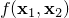
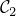
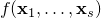

The block-coordinate update (BCU) method solves the problem in the form of
by updating just one or a few blocks of variables at a time, rather than updating all the blocks together (the batch update). The order of update can be deterministic or stochastic. The deterministic orders can be eithr cyclic or greedy according to a certain rank.
The main advantage is that updating one or just a few blocks of variables are computationally much cheaper than the batch update. On the other hand, convergence requires more stringent conditions and typically takes more iterations.
The update applied to each block can be exact minimization over the block or take different forms of inexact updates such as
one or a few gradient descent steps,
one or a few projected gradient descent steps,
one or a few (preconditioned) CG steps,
prox-linear update,
more …
There is a tradeoff between the per-update complexity and the progress of overall minimization.
BCU is a generalization to the following classic methods:
alternating minimization (of a function in the form of )
alternating projection (to find a point in the intersection of two convex sets and  by alternatingly projecting onto and )
(block) coordinate minimization (of a function in the form of )
(block) coordinate gradient descent (of a function in the form of )
It is challenging to establish the global convergence of BCU for optimization problems that are nonconvex and/or nonsmooth. In general, either nonconvexity or nonsmoothness can cause BCU to stagnate at a non-stationary point.
To establish global convergence, we assume that the non-smooth part of the objective is block-separable, namely, the non-smooth part can be written as . A differentiable part of the objective exists to couple all blocks together. Many interesting applications have this structure; see below. We propose a BCU algorithm with three different block-update schemes; the choice for each block is independent of others. Under certain conditions, we show that any limit point satisfies the Nash equilibrium conditions (a generalization to stationarity). Furthermore, global convergence and asymptotic convergence rate are established for problems obeying the Kurdyka-Lojasiewicz inequality.
Nonnegative matrix/tensor factorization
Nonnegative matrix/tensor completion (reconstruction from incomplete observations)
Hyperspectral data analysis
Sparse dictioanry learning
Blind source separation
Any multi-convex problems, where the feasible set and objective function are generally non-convex but convex in each block of variables.
Synthetic nonnegative matrices (factorization / completion)
Synthetic nonnegative tensor (factorization / completion)
CBCL and ORL image databases
Hyperspectral data
Y. Xu and W. Yin, A block coordinate descent method for regularized multiconvex optimization with applications to nonnegative tensor factorization and completion, SIAM Journal on Imaging Sciences, 6(3), 1758-1789, 2013.
Y. Xu. Alternating proximal gradient method for sparse nonnegative Tucker decomposition. Mathematical Programming Computation, 7(1), 39–70, 2015.
Y. Xu and W. Yin. A globally convergent algorithm for nonconvex optimization based on block coordinate update. Journal of Scientific Computing, 72(2), 700–734, 2017.